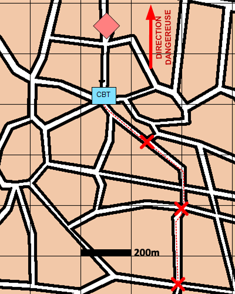

NIVEAU :Pion
ARME :Melee
MISSION :Freiner
Objectif principal
- Détruire / Neutraliser
Modalités d'exécution
-
Rejoindre le premier élément de l'itinéraire et s'y poster ;
-
Engager les éléments ENI reconnus ;
-
Décrocher vers l'élément suivant de l'itinéraire lorsque le rapport de force devient défavorable ;
-
Réitérer les 2 étapes précédentes jusqu'à avoir parcouru l'intégralité de l'itinéraire.
Schéma de modélisation

Paramètres obligatoires
Itinéraire : Liste ordonnée d'éléments (points, blocs urbains) selon lesquels le freinage sera effectué.
Paramètres optionnels
Direction Dangereuse
Limite gauche / Limite droite
Lignes de début et fin de mission [LDM/LFM]
Préparation du terrain